핵심 메시지: 오늘 보고서는 실제 수집·검증된 공개 출처만 근거로 작성했습니다. 데이터가 부족한 판단은 확인 필요로 남겼습니다.
확인한 수집 채널
- Google Cloud Blog Korea: RSS not_found, 페이지 파싱 ok, 링크 0건
- AI & Machine Learning: RSS not_found, 페이지 파싱 ok, 링크 0건
- Data Analytics: RSS not_found, 페이지 파싱 ok, 링크 0건
- Identity & Security: RSS not_found, 페이지 파싱 ok, 링크 0건
- Infrastructure Modernization: RSS not_found, 페이지 파싱 ok, 링크 0건
- Databases: RSS not_found, 페이지 파싱 ok, 링크 0건
핵심 트렌드 분석
2026-06-27
Securing agentic AI: What's new in VPC Service Controls
최근 24시간 보조 입력으로 사용한 기존 GCP Markdown입니다.
원문 출처 보기2026-06-26
Google Cloud latest news and announcements
최근 24시간 보조 입력으로 사용한 기존 GCP Markdown입니다.
원문 출처 보기
기술 변화의 의미와 기업 적용 관점
수집된 글은 구글 클라우드의 보안 경계, 인공지능 워크로드 보호, 데이터·분석 기능, 인프라 현대화 흐름 중 실제 게시된 항목에 한정해 해석했습니다. 기업은 공개 기능의 매력보다 현재 권한 모델, 데이터 위치, 감사 로그, 비용 추적 체계와 맞는지를 우선 확인해야 합니다.
| 문서 | 관찰된 서비스·기술 | 발행일 | 출처 |
|---|
| Securing agentic AI: What's new in VPC Service Controls | VPC Service Controls, Gemini, BigQuery, Confidential Computing, Google Cloud, IAM, Agent, MCP | 2026-06-27 | 원문 |
| Google Cloud latest news and announcements | Gemini, BigQuery, Google Cloud, GKE, Agent, MCP | 2026-06-26 | 원문 |
한국 기업 관점 시사점
한국 기업 관점에서는 개인정보·중요정보의 경계 통제, 데이터 접근권한 분리, 멀티클라우드 보안 정책과의 충돌 여부가 주요 검토 포인트입니다. 다만 이번 수집 데이터만으로 산업별 규제 충족 여부를 단정할 수 없으므로, 실제 적용 전 규정·계약·아키텍처 검토가 필요합니다.
실행 전략
로드맵 형식 대신, 이번 출처에서 확인된 변화별 검토 항목을 제시합니다. 첫째, 기능 발표가 보안 경계나 데이터 처리 위치를 바꾸는지 확인합니다. 둘째, 기존 아이덴티티·네트워크·로깅 체계와 연결되는 통제점을 식별합니다. 셋째, 비용·성능·운영 권한의 책임 소재를 문서화합니다.
리스크와 거버넌스 고려사항
데이터 경계
원문 기능이 어떤 데이터와 네트워크 경계를 전제로 하는지 확인해야 합니다.
권한과 감사
인공지능 또는 자동화 기능이 기존 권한 모델을 우회하지 않는지 검토해야 합니다.
비용과 성능
새 기능의 비용 단위, 지연시간, 장애 시 우회 경로는 확인 필요입니다.

시사점/인사이트 리포트
Securing agentic AI: What's new in VPC Service Controls
- 관찰된 사실: --- source_url: "https://cloud.google.com/blog/products/identity-security/securing-agentic-ai-whats-new-in-vpc-service-controls" source_name: "Google Cloud Blog - AI & Machine Learning" original_title: "Securing agentic AI: What's new in VPC Service Controls" published_at: "2026-06-27" collected_at_kst: "2026-06-27 07:42:54 KST" collection: gcp-blog content_hash: "b4e80120770cbac4e26c1ebd4882f3276d37897e4ff26648fd135d3763514734" fetch_method: "page-parse/urllib" language: "en" tags: [google-cloud, gcp-blog, enterprise-ai, cloud, source-digest] --- # Securing agentic AI: What's new in VPC Service Controls ## 메타데이터 - 출처 블로그: Google Cloud Blog - AI & Machine Learning - 발행일: 2026-06-27 - 원문 링크: https://cloud.google.com/blog/products/identity-security/securing-agentic-ai-whats-new-in-vpc-service-controls - 수집일: 2026-06-27 07:42:54 KST - Content Hash: `b4e80120770cbac4e26c1ebd4882f3276d37897e4ff26648fd135d3763514734` ## 요약 Designed for agentic workloads, new capabilities in VPC Service Controls can help establish a network-level, destination-based perimeter.
- 근거 출처 URL: https://cloud.google.com/blog/products/identity-security/securing-agentic-ai-whats-new-in-vpc-service-controls
- 기업 의사결정 시사점/리스크/기회: VPC Service Controls, Gemini, BigQuery, Confidential Computing, Google Cloud, IAM, Agent, MCP 관련 변화는 보안 경계, 데이터 접근권한, 비용 영향, 기존 아키텍처 적합성을 함께 검토해야 합니다. 원문만으로 내부 적용 범위가 확정되지는 않으므로 구체 적용 조건은 확인 필요입니다.
Google Cloud latest news and announcements
- 관찰된 사실: --- source_url: "https://cloud.google.com/blog/topics/inside-google-cloud/whats-new-google-cloud" source_name: "Google Cloud Blog - AI & Machine Learning" original_title: "Google Cloud latest news and announcements" published_at: "2026-06-26" collected_at_kst: "2026-06-27 07:42:54 KST" collection: gcp-blog content_hash: "5ad2aa9df4d7e6db675b3a3bd93b071302dc4e2825762411c3213ca12d1ed550" fetch_method: "page-parse/urllib" language: "en" tags: [google-cloud, gcp-blog, enterprise-ai, cloud, source-digest] --- # Google Cloud latest news and announcements ## 메타데이터 - 출처 블로그: Google Cloud Blog - AI & Machine Learning - 발행일: 2026-06-26 - 원문 링크: https://cloud.google.com/blog/topics/inside-google-cloud/whats-new-google-cloud - 수집일: 2026-06-27 07:42:54 KST - Content Hash: `5ad2aa9df4d7e6db675b3a3bd93b071302dc4e2825762411c3213ca12d1ed550` ## 요약 Find Google Cloud's latest newest updates, announcements, resources, events, learning opportunities, and more in one handy location.
- 근거 출처 URL: https://cloud.google.com/blog/topics/inside-google-cloud/whats-new-google-cloud
- 기업 의사결정 시사점/리스크/기회: Gemini, BigQuery, Google Cloud, GKE, Agent, MCP 관련 변화는 보안 경계, 데이터 접근권한, 비용 영향, 기존 아키텍처 적합성을 함께 검토해야 합니다. 원문만으로 내부 적용 범위가 확정되지는 않으므로 구체 적용 조건은 확인 필요입니다.